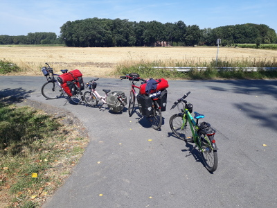

Elberadweg von Büchen nach Dresden
Vorbereitung
Dieses Jahr wollen wir uns mal den Elberadweg näher ansehen. Unser Sohn hat jetzt auch zwei Radtaschen und unsere Tochter wird wieder mit dem FollowMe hinter meinem Rad hergezogen, so dass wir 8 Radtaschen haben. Wir entscheiden uns dieses Jahr auch den Trangia Kocher plus Zubehör und Lebensmittel mitzunehmen, weil wir nicht wissen wie gut die Versorgungslage am Elberadweg ist. Ein wenig Werkzeug und für jede Reifengröß ein Ersatzschlauch kommen auch mit. Ansonsten fahren wir wie letztes Jahr mit unserem Bergans Tipi, dessen Boden wir aus Platzgründen wieder zuhause lassen.
Für den Streckenverlauf haben wir uns bei den Elberadwegführer von Bikeline besorgt und den herunterladbaren GPS Track ins Smartphone kopiert. So lässt sich mit der App LocusPro wunderbar offline navigieren. Offline ist auch besser, den auf weiten Strecken hat man mit einer O2 SIM kein Netz. Ab und zu mal Edge (also auch kein Netz) und nur in den Städten 4G. Der Radweg ist aber auch gut beschildert. Campingplätze haben wir spontan mit Camping.info oder Google Maps gesucht und auch immer etwas für eine Nacht gefunden.
Das Smartphone wurde tagsüber mit einer Solarzelle geladen und eine Powerbank war auch mit an Bord. Positiv zu bemerken ist, dass auf vielen Campingplätzen das Nachladen kein Problem war und sogar in einige Restaurants fanden sich Steckdosen.
Zuerst haben wir geplant wieder direkt in Kiel zu starten, ein örtlicher Radhändler empfahl uns Lübeck als Startort. Ein weiterer Tipp war Büchen, da es dort einen kostenpflichtigen Park and Ride Parkplatz direkt am Bahnhof gibt und wir auf dem Rückweg per Bahn eh durch Büchen kommen. Wir entschieden uns für Büchen, da es von dort am Elbe-Lübeck Kanal direkt flach los geht und wir eine Tagesetappe einsparen.

Unsere Reisekonfiguration.
13.07.2018 - 32km - Büchen - Lauenburg - Radegast
Beste Pizza
Um 9 Uhr sind wir mit dem vollgeladenen Auto nach Büchen gefahren und haben uns auf dem Park and Ride Platz für 20 Euro ein Monatsparkticket gezogen.
Die Bahnfahrt hätte mit den Rädern bei 74 Euro gelegen. Im Nachhinein hätten wir aber auch von Kiel den Nordostseekanal bis Brunsbüttel und dann die Elbe hoch bis Hamburg radeln können. Das hätte unsere Fahrt um zwei Tage verlängert.
Der Elbe-Lübeck Kanal ist schnell gefunden und wir geniessen den Kanalradweg. Der Genuß hört kurz vor Lauenburg auf, den der Radweg wird zu einem taschentuchschmalen Streifen.
Wir schauen uns Lauenburg an. Sehr sehenswert. Unser Vorschlag dort ein Eis zu Essen wird schnell in eine Pizza umgewandelt, denn die erste Eisdiele ist eher eine Pizzeria. Laut unserem Sohn die beste Pizza Hawai auf der gesamten Tour.
In Lauenburg fahren wir auf die Südseite der Elbe, wo wir am Camping Elbeling in Radegast unser Zelt aufbauen. Der Campingplatz hat einen Pool, was den Kindern gut gefällt und ein Restaurant, was uns allen gut gefällt.
14.07.2018 - 73km - Radegast - Hitzacker - Gartow
Schützenfest beim Frühstück
Vom Campingplatz fahren wir nach Bleckede, um bei einem Bäcker zu frühstücken. Direkt vor der Bäckerei bereiten sich die Schützen vor, so dass wir durch den Umzug noch etwas Unterhaltung haben.
In Bleckede nehmen wir die Fähre von den niedersächsischen zur brandenburgischen Elbseite. Dort soll der Radweg schöner und ebener sein. In Hitzacker wechseln wir wieder nach Niedersachsen, und kehren dort zum Mittagessen ein. Dabei ergoogeln wir unseren nächsten Campingplatz.
Wir müssen bis Gartow. Aus Zeitgründen beschliessen wir die Landstraße durch Dannenberg und Gorleben zu nehmen und nicht den Elberadweg. Wir erreichen den Campingpark Gartow, der direkt neben der Wendland Therme Gartow liegt, welche noch 2 Stunden geöffnet hat. Wir verzichten auf die Duschmarken und nutzen den vergünstigten Eintritt für Campinggäste in die Therme. Danach gestaltet sich die Suche nach einen Restaurant etwas schwierig. Im ersten Laden werden wir 30 Minuten ignoriert aber bei den Gartower Seeterassen bekommen wir noch etwas.
15.07.2018 - 69km - Gartow - Wittenberge - Havelberg
Das schönsten Stück
Wir brechen früh auf und nehmen die Fähre in Schnackenburg um wieder auf die brandenburgische Elbseite zu kommen. Mittags sind wir in Wittenberge und nach einer Pause setzen wir unseren Weg fort bis zur Campinginsel Havelberg. Dort kochen wir uns unser Abendessen und erkunden noch kurz die Stadt. Die heutige Etappe war im nachhinein das schönste Stück der Tour.
Fazit: Die Etappe war durch die hohen Temperaturen und das hügelige Streckenprofil mit 75km zu lang für unseren 9jährigen.
Google Maps
Naviki Radtourenplaner
Itzehoer Kanu-Club
Camping Ferienpark Geesthof
Campingplatz Waakhausen im Teufelsmoor
Campingplatz Aschenbeck in Dötlingen
Campingplatz Comfort Camping in Haselünne
Campingplatz Quendorfer See in Schuettorf
Seerestaurant Else am See
Campingplatz in Gescher
|